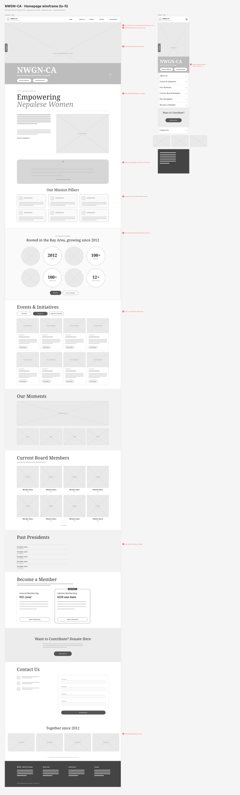
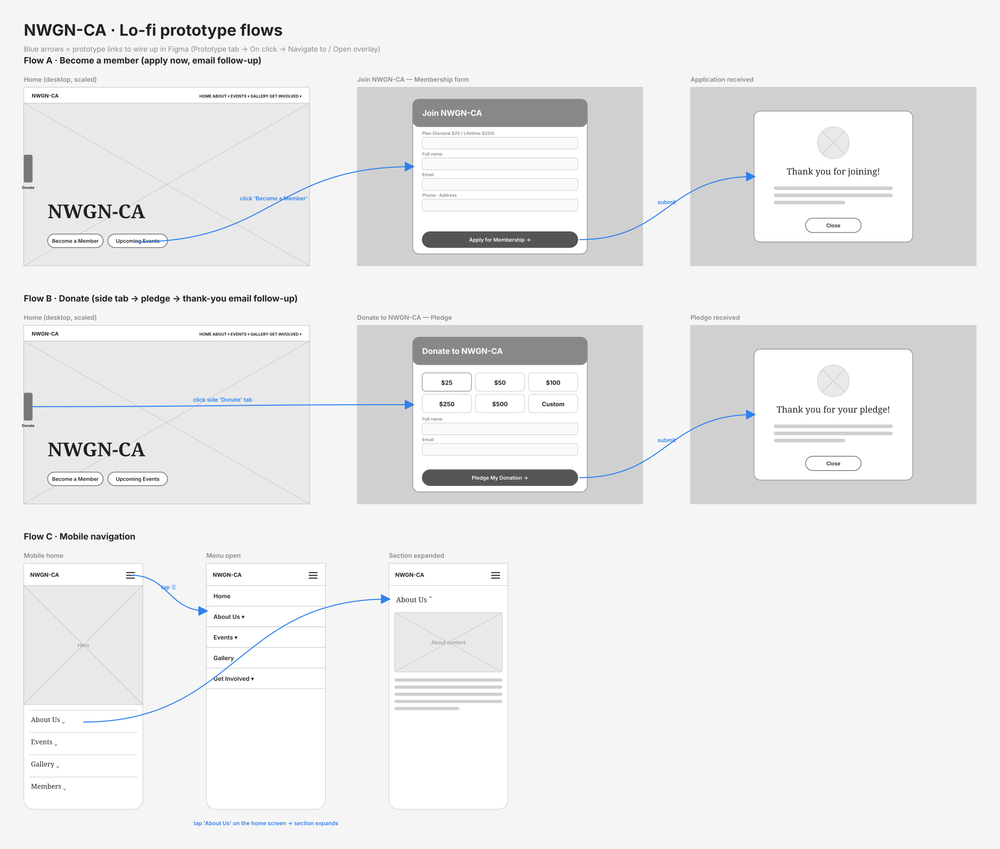

NWGN-CA
Redesigned a Bay Area non-profit's website into a warm, mobile-first home for Nepalese women, with clearer ways to join, donate and see the community.


Design thinking
- 1Empathize
The audience is Nepalese women of all ages. The old site had gone down, so I recovered the mission, board and events from the Internet Archive.
- 2Define
Three problems: members' faces were hidden, joining and giving were hard to find, and content was lost.
- 3Ideate
A moodboard from non-profits and studios, adapted from playful to elegant, warm and calm.
- 4Prototype
Lo-fi wireframes and a lo-fi prototype of join, donate and mobile navigation, then about 60 rounds of hi-fi iteration.
- 5Test
Client reviews, checks at six screen widths from 1920 to 390px, a stress test, then launch with HTTPS.
The old site was hard to use and didn't feel like the community.
Goal: put members' faces first and make Donate and Become a Member impossible to miss, without being pushy.
Flow chart
- Hero
- Become a Member
- Membership form
- Email follow-up
- Any section
- Side Donate tab
- Donation form
- Email follow-up
- Hamburger menu
- Tap-to-open sections
- Join or donate
Wireframe
The homepage wireframe set the section order, the hero, the circle stats band and the side Donate tab.
The lo-fi prototype tested the three key flows: join, donate and the mobile menu.


User interface
A palette from the logo, serif headings and generous white space. The hero opens slowly from a rounded window to full bleed.
Photo and stat circles give social proof at a glance, and on phones every section collapses to a tap-to-open bar.


Testing: before and after
Cards with initials for past presidents felt “AI-generated”, so they became a plain ruled list. Payments wait for later: apply now, email follow-up.
Reduced-motion support, alt text, focus outlines, 44px touch targets, spam protection on five forms, and a security fix for a readable admin password.

Design system
Colour
- Wine#6E2232
- Rose#B23A3A
- Marigold#E6A93B
- Rose soft#F4E3DE
- Ivory#FBF8F4
- Ink#1F1A17
Type
Accessibility choices
- Reduced-motion support
- Alt text on every image
- Skip link
- Visible focus
- 44px touch targets
- No horizontal scroll
Outcome
A real chapter, online with a site it can maintain itself: plain static files hosted free on GitHub Pages. Next: online payments, an events CMS and a Nepali-language toggle.